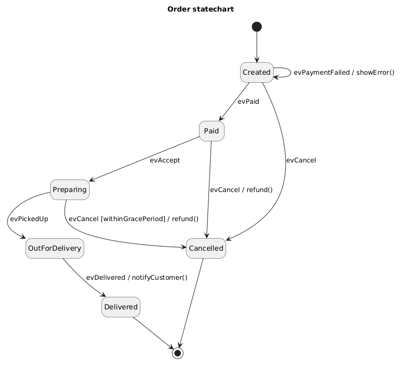
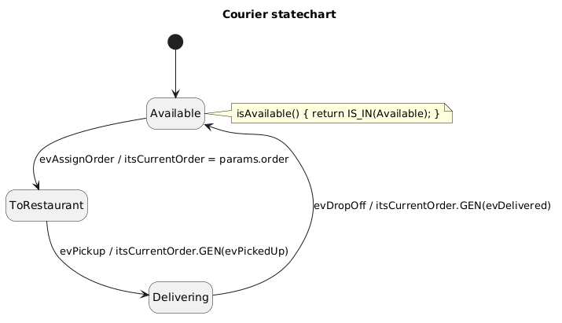

Sequence) to the Behavior Inside One Object (Statechart)Order and Courier.Customer, MenuItem, OrderService, DeliveryDispatcher just hold data or call methods — no statechart.GENerated in the sequence diagrams (evPaid, evAssignOrder, ...) land in an object's event queue. The statechart defines what happens next.Orderclass Order {
boolean paid, preparing, outForDelivery, delivered, cancelled;
void cancel() {
if (!delivered && !cancelled) {
if (paid && !preparing) refund();
else if (preparing && !outForDelivery && withinGracePeriod()) refund();
cancelled = true; // paid is still true, preparing may still be true...
}
}
}
delivered && cancelled or paid && cancelled.if to every method.Created, Paid, Preparing, OutForDelivery, Delivered or Cancelled.Order Statechart
| Element | Where in the Order Chart |
Meaning |
|---|---|---|
| State (מצב) rounded box |
Created, Paid, Preparing, ... |
A situation the object stays in until an event moves it. Exactly one state is active at any time. |
| Default transition filled circle → |
[*] → Created |
Where a newly created object starts. Right after «create» Order(cust), the order is in Created. |
| Transition (מעבר) labeled arrow |
Created → Paid on evPaid |
Label format: Trigger [Guard] / Action. Trigger = the event (אירוע) that fires it, Guard = a condition that must be true (תנאי), Action = code that runs during the move (פעולה). |
| Self transition | Created → Created on evPaymentFailed / showError() |
The event is handled, the action runs, but the object stays in the same state. |
| End state circled dot |
Delivered → ◉, Cancelled → ◉ |
The lifecycle is over. No more events are handled. |
evCancel| Current State | Transition | What Happens |
|---|---|---|
Created |
evCancel → Cancelled |
Nothing was charged yet, so there is nothing to refund. |
Paid |
evCancel / refund() → Cancelled |
Money was charged and the kitchen has not started: refund and cancel. |
Preparing |
evCancel [withinGracePeriod] / refund() → Cancelled |
Guard: only if withinGracePeriod is true. If the guard is false, nothing happens and the order stays in Preparing. |
OutForDelivery |
(no evCancel transition) |
The event is ignored. This is a design decision: cancellation is not allowed once the courier left. |
if to get this right. Here the answer is visible by reading the arrows — and a missing arrow is a deliberate rule, not a forgotten case.
Courier Statechart: Objects Talking via Events
evAssignOrder carries the order. The action itsCurrentOrder = params.order stores it (role name itsCurrentOrder from our class diagram).itsCurrentOrder.GEN(evPickedUp) and itsCurrentOrder.GEN(evDelivered) fire into the Order's queue — these are exactly the events the Order chart waits for.isAvailable() { return IS_IN(Available); } — this is how :DeliveryDispatcher decides in findAvailableCourier().evPickup / evDropOff come from outside (the courier pressing a button in the app).| Event | Sent By → Handled By | Where It Is Sent | Transition |
|---|---|---|---|
evPaid |
:OrderService → order |
Seq. 1, branch [isPaid] |
Created → Paid |
evPaymentFailed |
:OrderService → order |
Seq. 1, branch [payment failed] |
Created → Created / showError() |
evPrepareOrder |
:OrderService → rest |
Seq. 2 | Restaurant replies with evAccept to the order |
evAccept |
rest → order |
Restaurant's reaction | Paid → Preparing |
evAssignOrder |
:OrderService → courier |
Seq. 2, guard [courier != null] |
Available → ToRestaurant |
evPickedUp |
courier → order |
Courier chart, evPickup |
Preparing → OutForDelivery |
evDelivered |
courier → order |
Courier chart, evDropOff |
OutForDelivery → Delivered |
Restaurant reacts to evPrepareOrder too, but it has only two states, so we do not draw it here.)
Trigger [Guard] / Action (guard and action are optional).